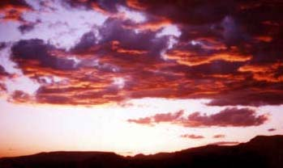

セドナ日記 〜 第３日目 98.5.6 エアポートメサから見る夕日 II カシドラルロックから、一度B＆Bに戻り、この日も夕日を見るためにエアポートメサに向かう。すっかり日課になってしまったが、ここから見る夕日は本当に毎日見る価値がある。少し雲が多い日だった。  日が沈むに連れ、夕日が放つ採光が雲の色をどんどん変えていく。ちょっと異様な感じさえした。 ポーラのいうとおり、セドナの夕日は、毎日違う。そして、その度に美しい。
エアポートメサから見る夕日 II
カシドラルロックから、一度B＆Bに戻り、この日も夕日を見るためにエアポートメサに向かう。すっかり日課になってしまったが、ここから見る夕日は本当に毎日見る価値がある。少し雲が多い日だった。
日が沈むに連れ、夕日が放つ採光が雲の色をどんどん変えていく。ちょっと異様な感じさえした。
ポーラのいうとおり、セドナの夕日は、毎日違う。そして、その度に美しい。